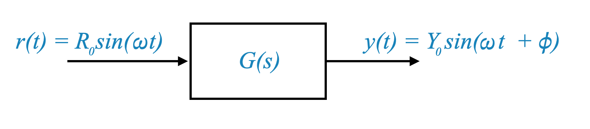
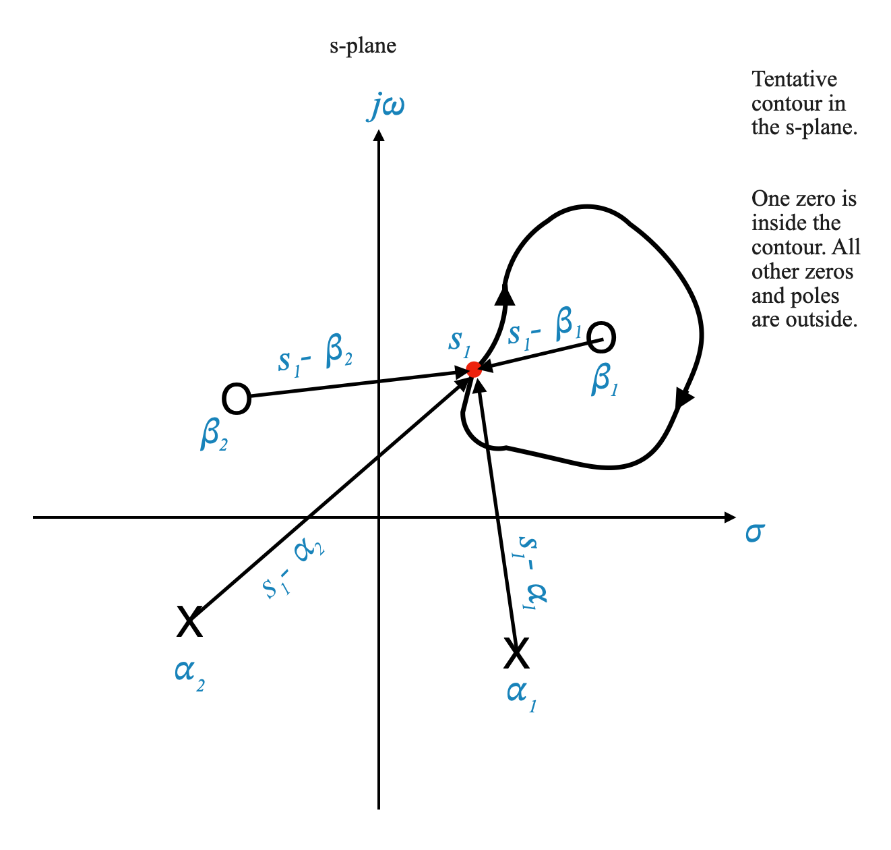
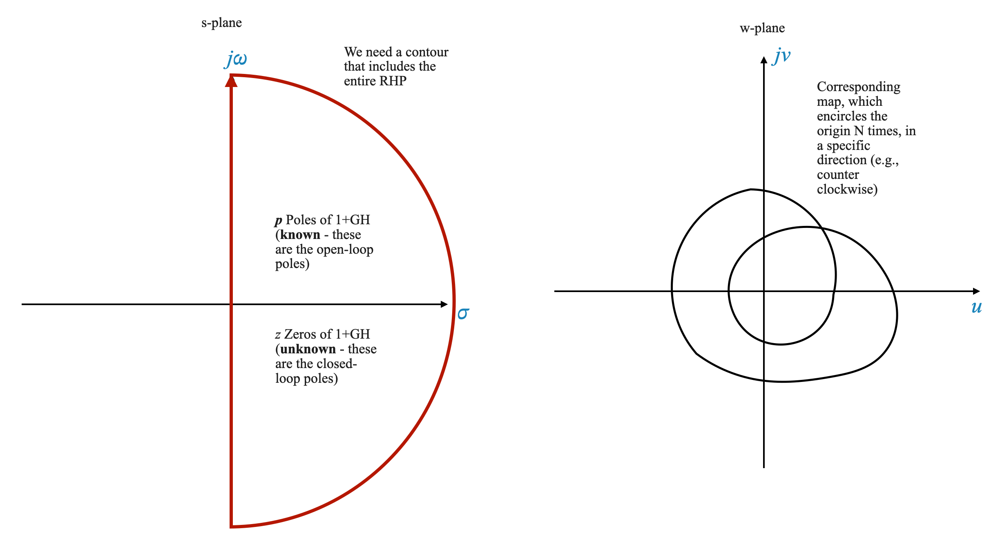
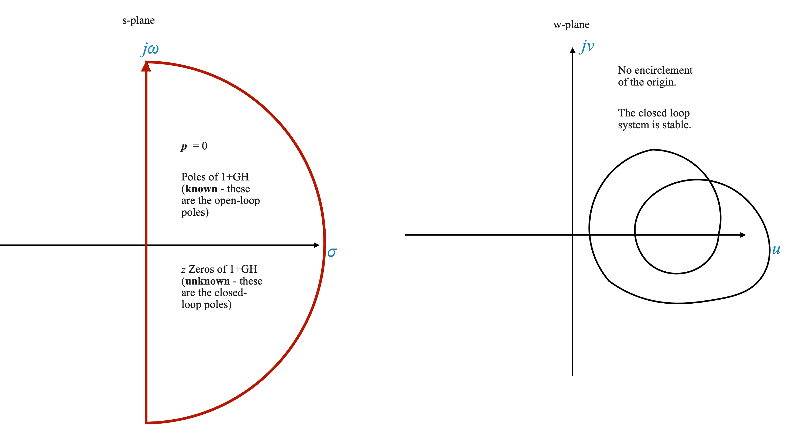

import numpy as np
import matplotlib.pyplot as plt
# Set up the subplots
fig, axs = plt.subplots(1, 2, figsize=(15, 7))
# Improve plot aesthetics (axis, grids, scale)
for i in range(len(axs)):
axs[i].axhline(0, color='black', linewidth=1.5, linestyle='--') # horizontal axis
axs[i].axvline(0, color='black', linewidth=1.5, linestyle='--') # vertical axis
axs[i].axis([-4, 3, -3, 3]) # scale the axis
axs[i].grid(True, which='both', linestyle='--', linewidth=0.5) # add grid
axs[i].set_aspect('equal', 'box')
axs[i].set_xticks(np.arange(-4, 4, 1))
axs[i].set_yticks(np.arange(-3, 4, 1))
axs[i].set_xlabel('Real')
axs[i].set_ylabel('Imaginary')
axs[0].set_title('S-Plane')
axs[1].set_title('$\omega$-Plane')
# Plot poles and zeros in the s-plane with annotations
pole = (-3, 0)
zero = (-2, 0)
axs[0].plot(pole[0], pole[1], 'bo', markersize=12) # blue circle for pole
axs[0].plot(zero[0], zero[1], 'rx', markersize=12) # red cross for zero
axs[0].text(pole[0], pole[1]+0.1, ' Pole', verticalalignment='bottom', horizontalalignment='right')
axs[0].text(zero[0], zero[1]-0.2, ' Zero', verticalalignment='top', horizontalalignment='right')
# Mapping from s-plane to w-plane
for xi in np.linspace(0, 2*np.pi, 100):
s_point = np.sin(xi), 3*np.cos(xi) # pick one s-point
axs[0].plot(s_point[0], s_point[1], 'm.', markersize=12) # plot the s-point in the s-plane
# Map one s_point to a W_point
W_point = (complex(s_point[0], s_point[1]) + 3)/(complex(s_point[0], s_point[1]) + 2)
axs[1].plot(np.real(W_point), np.imag(W_point), 'r.', markersize=12) # plot the W_point
plt.show()Introduction to Frequency Domain Analysis in Control Systems
Transition from Time Domain to Frequency Domain Analysis
Concept 1: Understanding the Shift in Perspective
Time Domain Analysis: Previously, we’ve discussed the root locus method, which is primarily focused on the time domain. This method is intuitive for visualizing transient performance through closed-loop poles.
Frequency Domain Analysis: Now, we will shift our focus to frequency domain analysis. This approach offers a different perspective, emphasizing the steady-state response of control systems to sinusoidal inputs.
Comparison and Relevance
Historical Context: Historically, frequency domain methods were developed before the root locus, but for pedagogical reasons, we started with the latter.
Transient vs. Steady-State Performance: In frequency domain analysis, understanding transient performance is less direct compared to the root locus method. Understanding the transient in terms of zeros and poles is very straightforward.
In frequency domain analysis, understanding the results requires a more abstract approach, as the method presents an indirect way of interpreting system behavior. This contrasts with the root locus method, where the interpretation of system performance is more straightforward and direct, primarily because it visually represents system dynamics in the time domain.
Frequency Domain Formalism
Concept 2: Foundations of Frequency Domain Analysis
Robustness of Frequency Domain Methods: One significant advantage of frequency domain analysis is its robustness, which means less dependency on the accuracy of the system model. This is crucial as obtaining an accurate model can be challenging. This is one of the main reasons why it is probably the most used method in control.
Ease of Analysis and Design: Another advantage is the relative ease of analysis and design in the frequency domain.
Frequency Response of Linear Systems
Concept 3: Sinusoidal Input and Steady-State Response
- System Response to Sinusoidal Input:
Consider a linear system described by a transfer function $ G(s) $. When this system is subjected to a sinusoidal input $ r(t) = R_0 (t) $, the output will have both transient and steady-state components.
- Stable System Assumption: For a stable system, transient components die out, leaving only the steady-state response. The steady-state output can be represented as $ y(t) = Y_0 (t + ) $.
The steady-state response of a linear system is also sinusoidal, the only change is in the amplitude and in the phase angle.
This implies that by understanding the amplitude ratio \(\frac{Y_0}{R_0}\) and the phase angle \(\phi\), we can completely describe the input-output relationship for the system’s steady-state response. Specifically, the key to this understanding lies in observing how \(\frac{Y_0}{R_0}\) and \(\phi\) change as a function of frequency.
|  |
Mathematical Representation
- Amplitude and Phase Change: The steady-state response to a sinusoidal input is also sinusoidal, with changes in amplitude and phase.
\[ \text{Amplitude Ratio} = \frac{Y_0}{R_0} \]
\[ \text{Phase Angle} = \phi \]
Frequency Response Definition
We can now define formally define the Frequency response.
Concept 4: Defining Frequency Response
- Frequency Response Components: The frequency response of a system can be characterized by how these parameters (amplitude ratio and phase angle) vary with the frequency \(\omega\).
\[ \text{Frequency Response} = \left\{ \frac{Y_0}{R_0}(\omega), \phi(\omega) \right\} \]
Relating to Transfer Function
- Link to Transfer Function:
The amplitude ratio $ $ is the magnitude of the transfer function $ G(s) $ evaluated at $ s = j$, and $ $ is the phase angle of $ G(j) $:
\[ \frac{Y_0}{R_0} = |G(s)|\Big|_{s=j\omega} = |G(j\omega)| \]
and
\[ \phi = \angle{G(j\omega)} \]
which means that the frequency response is completely contained in the mathematical model of the system.
Frequency response definition
the Magnitude \(|G(j\omega)|\) and the \(\angle{G(j\omega)}\) constitude the frequency response of the system
Frequency response plots
When we plot \(|G(j\omega)|\) and the \(\angle{G(j\omega)}\) with respect to \(\omega\) we obtain the Frequency response plots.
Complete System Characterization
Concept 5: Frequency Response as a Complete System Characterization
Beyond Steady-State Analysis: While frequency response is derived from steady-state sinusoidal response, it encapsulates the entire system behavior, including transient response. This is due to the Fourier transform’s ability to link frequency response to time-domain behavior.
Experimental Advantages: Frequency response plots can be experimentally obtained, providing a complete characterization of the system, even when a mathematical model isn’t available.
In our analysis, we examine two key relationships: the magnitude of the transfer function, denoted as $ G(j) $, as it varies with frequency \(\omega\), and the phase angle of $ G(j) $ as it also changes with frequency. These relationships can be graphically represented, giving us what are known as frequency response plots. These plots visually depict how the system responds to different frequencies.
Initially, it might seem that these frequency response plots only describe the system’s behavior in a steady-state scenario — that is, how the system performs after it has settled following any initial disturbances. However, there’s more to it than meets the eye.
In reality, these frequency response plots offer a complete characterization of the system, encompassing both steady-state and transient (temporary) responses. This comprehensive understanding is possible because of a powerful mathematical tool known as the Fourier transform. The Fourier transform allows us to relate the frequency response back to the system’s time response. Essentially, this means that from the frequency response data, we can predict how the system will react to any given input over time. To do this for different types of input signals, we use the Fourier series for periodic (repeating) signals, or the Fourier transform for non-periodic (one-time) signals. This way, we get a full picture of the system’s behavior in both the frequency and time domains.
As we progress, our focus will shift primarily to examining frequency response plots.
It’s important to understand that these plots, whether derived experimentally or through other means from the system’s sinusoidal response in a steady-state condition, actually represent the entire mathematical behavior of the system. This includes both the transient (short-term) and steady-state (long-term) responses.
The key to this comprehensive understanding lies in the Fourier transform. The Fourier transform serves as a crucial link, connecting the transient response of the system with its steady-state frequency response. This connection allows us to use the frequency response plots as a complete representation of the system’s behavior, encompassing all aspects of its response over time.
Practical Implications
Concept 6: Practical Applications and Advantages
Model Independence: The frequency domain approach is less reliant on a precise mathematical model, which is beneficial when such models are hard to obtain or uncertain.
Experimental Accessibility: Frequency response can be directly measured, bypassing the need for a detailed system model. This is especially useful for systems where the model is unknown or complex.
Consider a situation where you have access to the physical hardware of a system, but its mathematical model is unknown. Under these circumstances, you can’t directly use the root locus method for analysis or design, because the root locus requires a known mathematical model of the system. This model typically takes the form of a transfer function, or a pole-zero model.
However, if we switch to frequency domain analysis, the process becomes more straightforward. In this approach, you can start with sinusoidal testing of the system. This involves applying sinusoidal inputs to the hardware and measuring the system’s output in terms of magnitude and phase angle. By doing this, you gather frequency response data directly from the hardware.
Once you have this frequency response data, you can plot frequency response graphs. These graphs provide a complete characterization of the system’s behavior, capturing both its steady-state and transient responses. The advantage here is that you don’t need a pre-established mathematical model, like a transfer function, for analysis and design. This aspect is particularly significant because creating an accurate mathematical model of a system can be a challenging task.
Let’s say you still want to use the root locus method, but all you have is frequency response data. To proceed, you would need to fit this data into a pole-zero model, which can then be used for root locus design. However, it’s important to recognize that this fitting process is approximate. It’s nearly impossible to achieve a perfect match between the experimental frequency response data and the theoretical pole-zero model. As a result, the model you end up with for the root locus method is an approximation.
In contrast, frequency domain analysis does not require this intermediate fitting step. You work directly with the raw data obtained from your sinusoidal tests. This direct use of experimental data in frequency domain analysis simplifies the process and avoids the approximations and potential errors involved in fitting data to a pole-zero model.
I hope it’s clear why the frequency domain approach is so vital for control engineers. This approach isn’t just important, it’s essential. Interestingly, some of the system performance concepts we use in control engineering are also common in communication theory. Communication engineers often deal with sinusoidal inputs or a combination of sinusoidal signals, which aligns well with their focus on sinusoidal transfer functions.
However, for control engineers, the situation is a bit different. We don’t always work with sinusoidal inputs. In fact, in many cases, the systems we design and analyze may never encounter sinusoidal inputs. Yet, we still prefer the frequency domain formalism due to its numerous advantages.
One of these advantages is a clearer understanding of a system’s noise characteristics. The frequency domain approach allows us to analyze and interpret the noise filtering characteristics of a system more effectively than we could by looking solely at time-domain effects. For example, concepts like bandwidth are more intuitively understood in the frequency domain. Bandwidth relates to how a system filters out noise, which isn’t as clearly represented by time-domain metrics like rise time.
In summary, the frequency domain approach offers several key benefits:
- Noise Characteristics: It provides a clearer view of the system’s noise filtering behavior.
- Flexibility with System Models: This method can work with less accurate mathematical models or even experimental models.
- Ease of Analysis and Design: Frequency domain methods often offer simpler and more straightforward techniques for system analysis and design.
So, while the root locus method is advantageous for directly visualizing transient responses through closed-loop poles, the frequency domain approach excels in other critical areas, particularly in analyzing noise characteristics and offering flexibility with system models.
Root Locus vs. Frequency Domain Formalism
Root Locus Method
- The root locus method requires a detailed mathematical model of the system, typically a transfer function or a pole-zero model.
- This method is intuitive for visualizing the transient response in terms of closed-loop poles.
Frequency Domain Formalism
- In frequency domain analysis, direct mathematical modeling is not a prerequisite.
- Instead, one can employ experimental data obtained from sinusoidal testing of the system.
- This approach is useful when the exact mathematical model of the system is unknown or hard to determine.
Importance of Frequency Domain Analysis
- Versatility: Control engineers often work with inputs that are not sinusoidal, yet the frequency domain approach remains applicable due to its versatility.
- Noise Characteristics: Understanding the noise characteristics of a system is more straightforward in the frequency domain. This includes bandwidth and noise filtering behavior.
Advantages of Frequency Domain Formalism
- Noise Filtering: The frequency domain provides clearer insights into a system’s noise filtering characteristics.
- Model Independence: It can work with less accurate or experimental models.
- Ease of Analysis and Design: Offers simpler methods for analysis and design compared to the root locus method.
Complementary Nature of Analysis Methods
- Root Locus and Frequency Domain: These methods are not mutually exclusive but complement each other, each with its unique advantages.
- Continued Evolution: The field of control engineering is continuously evolving, with no single foolproof design method. Therefore, understanding various methods, including those beyond root locus and frequency domain, is crucial for a control engineer.
Pop-up Question: Why is the frequency domain formalism preferred when the mathematical model of the system is unknown?
Answer: The frequency domain formalism is preferred because it allows for analysis and design directly from experimental data, bypassing the need for a precise mathematical model.
Introduction to Frequency Domain Analysis
Basic Steps of Frequency Domain Analysis
- Stability Analysis
- Stability is determined using the Routh-Hurwitz criterion or the root locus itself.
- In frequency domain analysis, we use the Nyquist stability criterion, a central feature of this approach.
- Performance Specification
- Time Domain: Specifications include rise time, settling time, peak overshoot, etc.
- Frequency Domain: Specifications include bandwidth, resonant peak, and resonant frequency. Some of these features will need to be interpreted indirectly when translated to the time domain. This is the main limitation of the frequency domain methods.
- Design
- Similar compensators (lag, lead, lag-lead) are used in both root locus and frequency domain methods. However, the design process is often simpler in the frequency domain.
Pop-up Question: What is a key difference between performance specifications in the time domain and the frequency domain?
Answer: In the time domain, specifications are focused on transient response characteristics like rise time and overshoot, whereas in the frequency domain, they are centered around steady-state response characteristics like bandwidth and resonant frequency.
Nyquist Stability Criterion - Stability in Frequency Domain Analysis
The Nyquist stability criterion is based on the complex variable theory and Cauchy’s Argument Principle. It provides a way to determine the stability of a system by analyzing the open-loop transfer function in the frequency domain.
Understanding the Criterion
Closed-Loop Transfer Function:
Consider a general single-loop system where the closed-loop transfer function is \[ \frac{Y(s)}{R(s)} = \frac{G(s)}{1 + G(s)H(s)} \].

|
Stability Determination:
The denominator of the closed loop transfer function is: $ 1 + G(s)H(s) $, and this is the equation that we need to focus on.
The stability is determined by analyzing the locus of $ 1 + G(s)H(s) $ in the complex plane.
If no point in the right-half of the s-plane, including the imaginary axis, satisfies $ 1 + G(s)H(s) = 0 $, the system is stable.
In other words:
The S-Plane: Imagine the s-plane as a complex plane where each point ‘s’ represents a complex number with a real part (\(\sigma\)) and an imaginary part (\(j\omega\)).
Regions of Interest: We are particularly interested in the right-half and the left-half of this s-plane. The right-half includes the imaginary axis (\(j\omega\) axis).
Stability Definition: A control system is considered stable if all the closed-loop poles (the solutions of the system’s characteristic equation) lie in the left-half of the s-plane.
Understanding G(s)H(s) - The Open-Loop Transfer Function
- Composition of G(s)H(s): This function represents the product of all individual transfer functions in the control loop when the loop is open. It typically includes process, compensator, and sensor transfer functions. This function is known.

|
- Polynomial Representation: We often express \(G(s)H(s)\) as a ratio of two polynomials, \(N(s)\) and \(\Delta(s)\).
\[G(s)H(s) = \frac{N(s)}{\Delta(s)}\]
In most cases, \(G(s)H(s)\) takes this form, except in specific scenarios like dead time represented by $ e^{-s_d} $. For now, we restrict the analysis to \(G(s)H(s)\) as a ratio of two polynomials, but we can extend it to the more general case.
Poles and Zeros of G(s)H(s)
Poles and Zeros: These are fundamental in determining the behavior of the system. The zeros of \(G(s)H(s)\) are the roots of the numerator polynomial \(N(s)\), and the poles are the roots of the denominator polynomial \(\Delta(s)\).
Known Quantities: In open-loop analysis, these poles and zeros are known and form the basis for further stability analysis.
Stability in Open-Loop and Closed-Loop Systems
Open-Loop Stability: If the poles of \(G(s)H(s)\) lie in the left-half of the s-plane, the system is open-loop stable. Conversely, if any pole lies in the right-half, the system is open-loop unstable.
Closed-Loop Stability Focus: Our primary interest lies in the stability of the system under closed-loop conditions, i.e., when feedback is applied. Even an open-loop unstable system can be stabilized with appropriate feedback.
Note that an open-loop unstable system does not matter - we want to study the stability properties when the loop is closed, i.e., under feedback. At the same time, the open-loop poles (and zeros) are known to me.
Analyzing Closed-Loop Stability
The closed loop transfer function is:
\[ \frac{Y(s)}{R(s)} = \frac{G(s)}{1 + G(s)H(s)} \]
- The Function $ 1 + $: To analyze closed-loop stability, we focus on this function. It represents the denominator of the closed-loop transfer function.
We can expand this function as:
\[ 1 + \frac{N(s)}{\Delta(s)} = \frac{\Delta(s) + N(s)}{\Delta(s)}\]
- Polynomial Form: Assuming \(\Delta(s)\) is an nth-order polynomial, we can express it in a factorized form as:
\[ \Delta(s) = (s - \alpha_1)(s - \alpha_2)...(s - \alpha_n) \]
The numerator (\(\Delta(s) + N(s)\))’s order is \(n\). This is because the \(\text{order}[N(s)] \le \text{order}[\Delta(s)]\) to ensure physical realisability.
For this reason we can then re-write our function as:
\[ 1+G(s)H(s) = 1 + \frac{N(s)}{\Delta(s)} = \frac{\Delta(s) + N(s)}{\Delta(s)} = \frac{(s - \beta_1)(s - \beta_2)...(s - \beta_n)}{(s - \alpha_1)(s - \alpha_2)...(s - \alpha_n)}\]
Remember, if any value of ‘s’ in the right-half of the plane or on the imaginary axis satisfies the equation (1 + G(s)H(s) = 0), then the system is deemed unstable. This forms the basis of our conjecture regarding system stability.
Pop-up Question: Why do we focus on the left-half of the s-plane for stability?
Answer: The left-half of the s-plane indicates that all poles have negative real parts, which corresponds to decaying responses in the time domain, a key characteristic of a stable system.
Pop-up Question: What is the principle behind the Nyquist Stability Criterion?
Answer: The Nyquist Stability Criterion is based on the principle of argument in complex analysis, which relates the number of encirclements of a point by a function in the complex plane to the number of zeroes and poles of that function.
Understanding the S-Plane and W-Plane
The S-Plane
- Description: The s-plane is a complex plane where each point ‘s’ represents a complex number, with a real part (\(\sigma\)) and an imaginary part (\(j\omega\)).
- Complex Variable Representation: Each point on the s-plane is a complex variable, represented as σ + jω.
The W-Plane
- Relationship with S-Plane: When we apply the function \(1 + G(s)H(s)\) to a point on the s-plane, it maps to a point on another complex plane, called the W-plane.
- Complex Variable on W-Plane: This mapped point on the W-plane is also a complex variable, represented as \(u + jv\).
(see picture Left, below.)
Mapping from S-Plane to W-Plane
- Function Application: The function \(1 + G(s)H(s)\) transforms each point ‘s’ on the s-plane to a corresponding point on the W-plane.
- One-to-One Mapping: For a rational function (like the one we have), for every point on the s-plane, there is a unique corresponding point on the W-plane.
(see picture Right, below.)

|

|
Stability Analysis Using \(1+G(s)H(s)\) Mapping
Objective: To analyze the stability of a system, we examine how the right-half of the s-plane, including the imaginary axis, maps onto the W-plane using \(1 + G(s)H(s)\).
Stability Criteria: If the origin of the W-plane is not covered by this mapping, the system is stable. If the origin is covered, the system is unstable.
This is the equivalent statement of saying “equation \(1 + G(s)H(s)\) does not have any roots in the RHP (including the imaginary axis)”.
Contour Mapping
Concept of Contours: A contour in the s-plane, which is a connected set of points (a contour is a continuous path in the s-plane, which can be a simple curve or a closed loop), will map to a corresponding contour in the W-plane due to the one-to-one nature of the mapping.
Mapping to W-Plane: When we map this contour to the W-plane using our transfer function, the resulting path in the W-plane reflects the characteristics of the system’s poles and zeros.
Focus on Qualitative Mapping
- Qualitative Analysis: Our primary interest is not in the exact one-to-one quantitative mapping but in understanding how the mapping qualitatively affects system stability, particularly around the origin of the \(\omega\)-plane. In other words, we would like to know if the origin of the W-plane is covered or not.
In our analysis, the focus is primarily on the qualitative characteristics of how specific contours in the s-plane, which may encircle key points such as zeros or poles, are transformed and represented in the W-plane.
Indeed, if we were to emphasize a precise, quantitative one-to-one mapping between these planes, the task would become exceedingly complex. Such an approach would diminish the practical utility and relevance of the Nyquist criterion in system analysis.
Pop-up Question: Why do we focus on qualitative rather than quantitative mapping in system analysis?
Answer: We focus on qualitative mapping because it reveals how the system behaves near critical points, like the origin of the \(\omega\)-plane, which is crucial for assessing system stability.
Example of Contour Mapping
Scenario: Consider a contour in the s-plane enclosing a zero of the function \(1 + G(s)H(s)\) and analyze its mapping onto the W-plane.
Analysis: The key is to understand how the angles contributed by different points on this contour result in the mapping on the W-plane.
Our transfer function performs the task of transforming a point from the s-plane to a corresponding point in a new plane, denoted as the \(\omega\)-plane.
When we select numerous points on the s-plane that are connected to form a continuous path (known as a contour), these points are mapped to form a continuous path in the \(\omega\)-plane as well.
Specifically, when we choose points along a contour in the s-plane, which is essentially a line that forms a loop and connects back to itself, this results in a closed loop in the \(\omega\)-plane. We refer to this closed loop as a plot.
Importantly, this plot in the \(\omega\)-plane encapsulates crucial information about the system. It conveys both the magnitude and the phase angle associated with each pole and zero of the system.
Visualization code for mapping a contour from the s-plane to the \(\omega\)-plane.
We can verify this with Python as shown below.
This code shows a graphical representation of a contour in the s-plane and its corresponding path in the \(\omega\)-plane.
Sample Contour Analysis in the S-Plane and its Mapping to the \(\omega\)-Plane
Consider a specific path, or contour, in the s-plane that includes a zero of the transfer function \(1 + G(s)H(s)\). Our goal is to understand how this contour translates into the \(\omega\)-plane.
Given that all poles and zeros of \(1 + G(s)H(s)\) are known, we express it as:
\[ 1 + G(s)H(s) = \frac{(s-\beta_1)(s-\beta_2)...}{(s-\alpha_1)(s-\alpha_2)...} \]
Mapping a Point from S-Plane to \(\omega\)-Plane
Example with a Specific Point \(s_1\): To illustrate, let’s focus on a particular point \(s_1\) on our s-plane contour.
\[ 1 + G(s_1)H(s_1) = \frac{(s_1-\beta_1)(s_1-\beta_2)...}{(s_1-\alpha_1)(s_1-\alpha_2)...} \]
Here, each term $ (s_1-_i) $ represents a ‘numerator phasor’, and each $ (s_1-_i) $ is a ‘denominator phasor’.
Calculating the Mapped Point’s Magnitude and Phase:
Magnitude: The magnitude of the mapped point on the \(\omega\)-plane is derived by multiplying each numerator phasor and dividing by each denominator phasor.
Phase: The phase angle of the mapped point is calculated by summing up the phases of the numerator phasors and subtracting the phases of the denominator phasors.
Resulting Mapped Point \(w_1\): This process results in a point in the \(\omega\)-plane, denoted as \(w_1\).

|

|
Visualizing Phasors and Contour Mapping
Graphical Representation: The phasors corresponding to the point \(s_1\) are graphically represented below (Left), showing how they contribute to the mapping process.
Contour Movement and Mapping: As we continue to move along the contour in the s-plane, say in a clockwise direction, we create a corresponding contour in the \(\omega\)-plane (Right below).

|

|
import numpy as np
import matplotlib.pyplot as plt
from ipywidgets import interact, FloatSlider
# Define the transfer function
def transfer_function(s):
return s + 2
# Zero of the transfer function
zero = -2
# Define the contour in the s-plane (a circle of radius 3)
def s_plane_contour(theta):
return 3 * np.exp(1j * theta)
# Map the contour to the omega-plane using the transfer function
def omega_plane_mapping(s):
return transfer_function(s)
# Pre-calculate all the points on the contour for the omega-plane
theta_values = np.linspace(0, 2*np.pi, 300)
omega_points = [omega_plane_mapping(s_plane_contour(theta)) for theta in theta_values]
# Function to plot the contours
def plot_contours(theta):
s_point = s_plane_contour(theta)
omega_point = omega_plane_mapping(s_point)
fig, axs = plt.subplots(1, 2, figsize=(12, 6))
# Plotting in the s-plane
axs[0].plot(np.real(s_point), np.imag(s_point), 'ro', label='Current Point') # current point
axs[0].plot(zero, 0, 'gX', markersize=10, label='Zero') # zero of the transfer function
circle = plt.Circle((0, 0), 3, color='b', fill=False)
axs[0].add_artist(circle)
axs[0].set_xlim([-4, 4])
axs[0].set_ylim([-4, 4])
axs[0].axhline(0, color='black')
axs[0].axvline(0, color='black')
axs[0].grid(True)
axs[0].set_title('S-Plane')
axs[0].set_xlabel('Real')
axs[0].set_ylabel('Imaginary')
axs[0].legend()
# Plotting in the omega-plane
axs[1].plot([np.real(wp) for wp in omega_points], [np.imag(wp) for wp in omega_points], 'b-', alpha=0.7) # all points
axs[1].plot(np.real(omega_point), np.imag(omega_point), 'ro', label='Current Point') # current point
axs[1].set_xlim([-5, 5])
axs[1].set_ylim([-5, 5])
axs[1].axhline(0, color='black')
axs[1].axvline(0, color='black')
axs[1].grid(True)
axs[1].set_title('$\omega$-Plane')
axs[1].set_xlabel('Real')
axs[1].set_ylabel('Imaginary')
axs[1].legend()
plt.show()
# Create a slider for interactive plot
interact(plot_contours, theta=FloatSlider(min=0, max=2*np.pi, step=0.01, value=0, description='Theta:'))<function __main__.plot_contours(theta)>Let’s consider once again our arbitrary contour:
|  |

|
Consider the behavior of individual phasors, such as the $ (s - _1) $ phasor, while moving along a specific contour in the s-plane.
**Phasor $ (s - _1) $**: As we travel along the contour that includes the zero $ _1 $, the phasor $ (s - _1) $ will contribute a total angle change. When you start at a certain point on the contour and move all the way around it, the angle change contributed by $ (s - _1) $ sums up to $ -2$ radians.
**Phasor $ (s - _2) $**: Now, if you consider a different phasor, $ (s - _2) $, where $ _2 $ is not enclosed by the contour, the scenario changes. As you follow the same contour starting from one point and returning back to it, the net angle change contributed by $ (s - _2) $ ends up being zero. This is because any positive angle change during one part of the journey is canceled out by a corresponding negative angle change in another part.
This understanding is crucial for the Nyquist stability criterion. It tells us that:
If a zero of the function $ 1 + G(s)H(s) $ is enclosed within the contour, it contributes an angle of $ 2$ radians to the total angle change as we traverse the contour.
If all other poles and zeros are outside the contour, they do not contribute to the net angle change.
Therefore, regardless of the shape of the contour, if it encloses a zero of $ 1 + G(s)H(s) $, the resulting mapped contour in the \(\omega\)-plane will encircle the origin exactly once, and in a clockwise direction, due to the total angle change of $ -2$ radians.
Case of Enclosing a Zero
- Enclosing a Zero: Suppose our contour in the s-plane encircles a zero of the function \(1 + G(s)H(s)\). In this scenario, as we traverse the contour in a clockwise direction, the total angle change contributed by this enclosed zero is $ -2$ radians.
- Resulting Encirclement: This means that the corresponding contour in the \(\omega\)-plane will encircle the origin in the clockwise direction exactly once.
Case of Enclosing a Pole
- Enclosing a Pole: Now, imagine instead that the contour encloses a pole (not a zero) of \(1 + G(s)H(s)\). All other zeros and poles are outside this contour.

|
- Effect on Angle Contribution: The angle contribution for a pole is the opposite of that for a zero. Therefore, the total angle change is $ +2$ radians, indicating a counter-clockwise encirclement in the \(\omega\)-plane.
- Net Encirclement: This results in one complete counter-clockwise rotation around the origin in the \(\omega\)-plane.
Combining Poles and Zeros
- Combining Poles and Zeros: Consider a contour that encloses both poles and a zero. For example, a contour with two poles and one zero.
- Net Rotation Calculation: The net rotation in the W-plane is determined by the difference between counter-clockwise rotations (contributed by poles) and clockwise rotations (contributed by zeros). In our example, we have two counter-clockwise rotations (poles) and one clockwise rotation (zero), resulting in one net counter-clockwise rotation (\(2 - 1 = 1\)).
THE CODE BELOW IS NOT WORKING WELL!! FIX IT!!
import numpy as np
import matplotlib.pyplot as plt
from ipywidgets import interact, IntSlider, Dropdown
def transfer_function(s, case):
if case == 'Case 1':
return s/(s**2 + 6*s + 18)
elif case == 'Case 2':
return (s**2 + 1.5*s + 0.8125)/((s + 1)*(s + 0.8))
elif case == 'Case 3':
return 1/((s + 1)*(s + 0.8))
elif case == 'Case 4':
return s + 3
else:
return s # Default case
def plot_contour_point(angle, case):
# Define the contour based on the selected case
if case in ['Case 1', 'Case 3', 'Case 4']:
radius = 3
center = (-3, 0)
elif case == 'Case 2':
radius = 2
center = (0.5, 0)
else:
radius = 2
center = (0, 0)
angle = np.deg2rad(angle)
s = complex(center[0] + radius * np.cos(angle), center[1] + radius * np.sin(angle))
tnf = transfer_function(s, case)
fig, axs = plt.subplots(1, 2, figsize=(12, 6))
axs[0].set_title('S-plane')
axs[1].set_title('W-plane')
# Plot the contour and current point in the s-plane
theta = np.linspace(0, 2*np.pi, 100)
axs[0].plot(center[0] + radius * np.cos(theta), center[1] + radius * np.sin(theta), 'b-')
axs[0].plot(np.real(s), np.imag(s), 'ro')
# Plot in the omega-plane
omega_points = [transfer_function(complex(center[0] + radius * np.cos(t), center[1] + radius * np.sin(t)), case) for t in theta]
axs[1].plot([np.real(w) for w in omega_points], [np.imag(w) for w in omega_points], 'b-')
# axs[1].plot(np.real(tnf), np.imag(tnf), 'ro')
for ax in axs:
ax.axhline(0, color='black', linewidth=1)
ax.axvline(0, color='black', linewidth=1)
ax.grid(True)
ax.set_xlabel('Real')
ax.set_ylabel('Imaginary')
plt.show()
# Interactive widgets
angle_slider = FloatSlider(min=0, max=360, step=1, value=0, description='Angle:')
case_dropdown = Dropdown(options=['Case 1', 'Case 2', 'Case 3', 'Case 4'], value='Case 1', description='Case:')
interact(plot_contour_point, angle=angle_slider, case=case_dropdown)<function __main__.plot_contour_point(angle, case)>Implications for Nyquist Criterion
These observations form the basis of the Nyquist stability criterion. It’s important to note that while we’ve discussed the qualitative aspects of the mapping, the exact shape of the contour in the W-plane is not our primary concern.
With this understanding, we are now prepared to delve into stating and applying the Nyquist stability criterion in control system analysis.
Cauchy’s argument principle
We can tell the relative difference between the number of poles and zeros inside of a contour by counting how many time the plot circles the origin and in which direction.
The Nyquist Stability Criterion
We are going to apply Cauchy’s Argument Principle to a specific contour in the s-plane, as illustrated on the left in the figure below.
This contour encircles the entire right half-plane (RHP), including the imaginary axis. This contour is called the Nyquist Contour.
For the initial analysis, we’ll assume that there are no poles located on the contour itself. We will consider the implications of having poles on the contour at a later stage.
Through the function \(1 + G(s)H(s)\), this specific contour in the s-plane is mapped to the \(\omega\)-plane, shown on the right in the picture.
|  |
Key Points to Note:
- Open-Loop Poles: The poles of \(1 + G(s)H(s)\) are the same as the open-loop poles of the system, which we know from the zeros and poles of \(G(s)H(s)\).
- Closed-Loop Poles: The zeros of \(1 + G(s)H(s)\) correspond to the closed-loop poles of the system. These zeros are not known beforehand and are what we aim to determine for stability analysis.
According to the Nyquist Criterion:
If the mapping in the W-Plane encircles the origin \(N\) times in a counter-clockwise direction, this number of encirclements (\(N\)) is mathematically expressed as the number of poles of \(1 + G(s)H(s)\) (denoted as \(P\)) minus the number of its zeros (denoted as \(Z\)). This relationship is captured in the Nyquist equation:
\[ N = P - Z \]
The Nyquist equation forms the basis of the Nyquist Criterion, which asserts that the total number of counter-clockwise encirclements of the origin in the W-Plane by the function \(1 + G(s)H(s)\) is equal to the difference between the number of its poles and zeros.
Therefore, to determine the closed-loop stability of the system, it’s necessary to map the contour onto the W-plane and count the number of times (\(N\)) this mapping encircles the origin.
From the Nyquist equation we obtain directly how many zeros of \(1+G(s)H(s)\) are in the right half plane.
Side Comments
Regarding the scenario where a zero of \(1 + G(s)H(s)\) (pole in closed loop) lies on the contour, it will be important to consider its impact. If a zero is on the contour, this implies that the contour will pass through the origin in the W-Plane. Such a situation typically indicates a condition of marginal stability for the system. In other words, when the contour in the s-plane, transformed by the function \(1 + G(s)H(s)\), passes through the origin in the W-Plane, it represents a special case where the function’s zeros (which are the closed-loop poles) coincide with the contour. This scenario requires careful analysis as it relates to the system’s stability margin.
Another important consideration arises when a pole of the open-loop transfer function $ G(s)H(s) $ falls on the Nyquist contour. In such instances, the mapping of that point to the W-Plane results in an infinite value. This occurrence requires special attention in the analysis of the system’s stability.
Zeros of \(G(s)H(s)\) do not create any problem. Unlike poles, which can map to infinity on the W-plane and complicate the analysis (as infinite values need special consideration), zeros do not result in such extreme values in the mapping process. Therefore, they do not add complexity to the graphical interpretation of the Nyquist plot.
Translating the Nyquist Plot
In our study of control systems, we have focused on analyzing the Nyquist Plot of the function
\[ 1 + G(s)H(s) \]
and observed its behavior in terms of the number of times it encircles the origin in the W-plane.
Creating the plot of this function can be challenging due to its complexity. To simplify our analysis, we can instead consider the Nyquist Plot of just the function $ G(s)H(s) $. This approach involves counting the encirclements around the critical point \(-1 + 0j\) on the complex plane.
This method not only simplifies the plotting process but also provides us with the essential information needed to assess the stability of the control system.
Interpretation of the Nyquist Stability Criterion
The criterion relates to the frequency response of a system and is expressed as:
\[ N = P - Z \]
where: - \(N\) is the number of counter-clockwise encirclements of the $-1+0j $point in the W-plane. - \(P\) is the number of poles of \(1 + G(s)H(s)\) in the right half of the s-plane. - \(Z\) is the number of zeros of \(1 + G(s)H(s)\) in the same plane.
Applying the Criterion
To apply this criterion, we follow these steps:
Mapping the Contour: Consider a contour in the s-plane that encompasses the right half, including the imaginary axis. We assume no poles lie directly on this contour initially (we’ll address the scenario with poles on the contour later).
Transformation to W-Plane: This contour is then mapped onto the W-plane via the function \(G(s)H(s)\).
Counting Encirclements: The number of times this mapped contour encircles the point -1 in the W-plane (in a counter-clockwise direction) gives us \(N\). This also means that \(N\) is positive when the contour encircles the point -1 in the counter-clockwise direction.
Determining Stability:
- We use the equation \(N = P - Z\) to determine \(Z\) the zeros of \(1 + G(s)H(s)\) in the RHP, which correspond to the closed loop poles in the RHP.
Open-Loop Stable Systems
For an open-loop stable system (where \(P = 0\)), the closed-loop system is stable if the Nyquist plot in the W-plane does not encircle the origin.
When \(P=0\) (open loop system is stable)
\(Z=N \Rightarrow N=0\) or no encirclements of the point \(-1\) to have a stable closed loop system (for stability \(Z=0\)).
This is the case we come across most often.
For example, given an open-loop stable system we would like a Nyquist plot as:
|  |
Open-Loop Unstable Systems
For an open-loop unstable system, say with one pole in the right-half plane (\(P = 1\)), the system is stable under closed-loop operation if the G(s)H(s) plot encircles the point \(-1 + j0\) once in the counter-clockwise direction.
In order to guarantee that there are no zeros (roots of \(1+G(s)H(s)\)) in the right half plane (\(Z=0\)), we need to have exactly 1 counter-clockwise (CCW) encirclement of the point -1 for each open loop pole in the right half plane:
\[ P = N \]
Check Your Understanding
Question: What does \(N = P - Z\) signify in the Nyquist criterion?
Answer: It represents the relationship between the number of counter-clockwise encirclements of the origin in the W-plane, the number of poles, and the number of zeros of the open-loop transfer function in the right half of the s-plane.
Question: For an open-loop stable system, what is the key condition for closed-loop stability?
Answer: The Nyquist plot of \(G(s)H(s)\) in the W-plane should not encircle the point \(-1 + j0\).